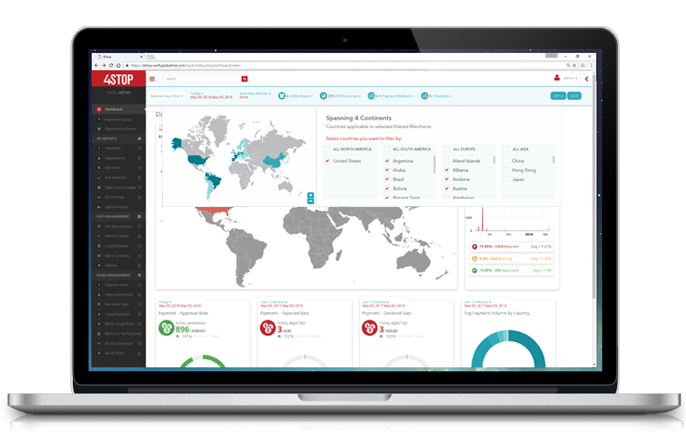
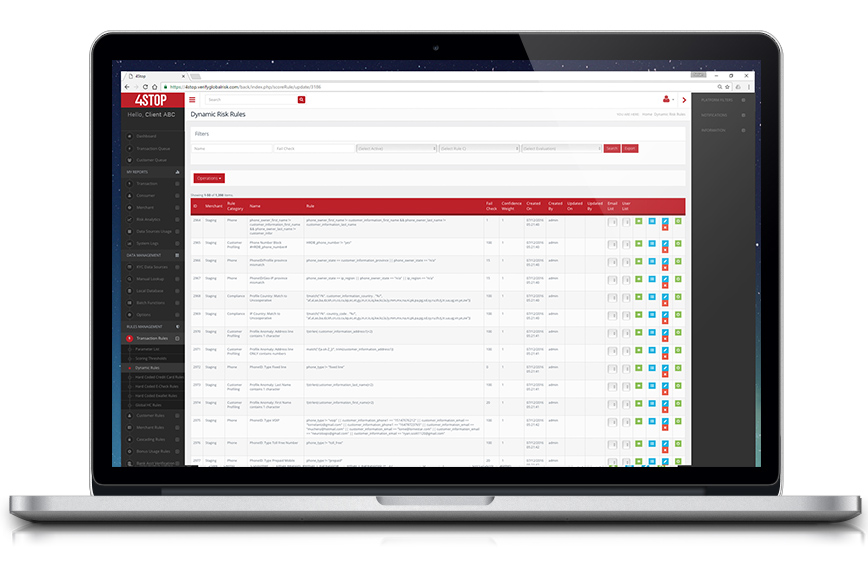

How To Successfully Bring KYC, Frictionless Onboarding and Anti-Fraud Solutions Together.
Released June 28th, 2018. View Article On The Paypers
Talking to Ingo Ernst & Alvaro Kurth of 4Stop about ways of boosting the digital onboarding process with optimal KYC, compliance and fraud prevention measures.
How do your KYC and anti-fraud services stand out from other services that have the same scope on the market?
4Stop differentiates itself by solving businesses risk-based approach through a modern, all-in-one KYC, compliance and anti-fraud solution. Our company aggregates trusted information, managed services, data, software and expertise into a single solution. Through one API businesses access hundreds of global KYC data sources for worldwide compliance and fraud prevention, data science and their proprietary real-time anti-fraud and monitoring technology. Designed to eliminate the cumbersome process of compliance and multiple integrations required to support their risk-based models, with 4Stop, businesses can simply activate required KYC and automatically perform dynamic checking and securing of customers and transactions with real-time risk analysis and monitoring output.
Providing businesses with the all-encompassing solution for KYC, compliance and anti-fraud on a global scale that supports enterprise-level volumes, businesses obtain a true global centralized view of risk. Backed with quantifiable data to confidently anticipate vulnerabilities, effortlessly manage regulatory and risk obligations and be empowered to make well-informed decisions to accelerate business performance.
4Stop has been developed by a team with over 60 years of experience collectively in the risk management industry and who have built their software with a full understanding of compliance and fraud prevention needs — locally and globally, today and in the future.


What best practices do you recommend for onboarding large volumes of customers in a frictionless, secure, yet compliant way?
The 4Stops’ technology enables businesses to easily activate required KYC for onboarding large volumes of customers in a compliant and secure manner. The platform offers hundreds of global KYC data sources that can be activated and deployed in real-time for each and every customer journey touchpoint. Combined with 4Stop’s cascading KYC verification logic, customers are validated in a cost-saving manner, with real-time intelligence and redundancy to ensure the best data enrichment experience is obtained – businesses have absolute confidence and compliance requirements are adhered to and managed.
“It’s about keeping information uniform and consistent. Therefore, we not only run parameters at specific touchpoints within businesses customer journeys, we layer in manual data health check performance reviews to ensure accuracy and the highest standards for risk mitigation. Our mission here is to monitoring data performance results in real-time and ensure the system is performing at the highest standard and in the most accurate way possible.” – Nolan Bolusan COO, 4Stop.
Furthermore, if businesses utilise the 4S data science analysis tools towards risk and compliance procedures they can make quantifiable decisions prior to entering a new market or region. Data simulation reports also allow them to tailor their configured KYC and fraud prevention to optimize compliance-based models and significantly reduce their exposure to risk.


Will Big Data for KYC still be an option once GDPR is implemented, and if so - how?
Risks are interconnected, dynamic and widespread. As our online financial eco-system continues to evolve, businesses will require a deeper risk insight that big data and AI can provide, as well as smart and flexible products that will help mitigate these risks from cyber-attacks, autonomous technologies, etc. Performing KYC on customers upon registration and again for ongoing engagement and/or transactional touchpoints is and will remain a vital process in securing business transactions and operations.
“Having integrated the multitude of APIs of data sources into our secure platform we are able to tackle secure customer authentication through the different compliance layers such as validating, verifying and authenticating the customer, all backed behind our anti-fraud technology and monitoring. We bring all these key elements together to ensure we provide the most cost-effective and compliant solution for the time.” - Alvaro Kurth, CRO | DPO 4Stop.
Making sure that the customer always has the right to delete his own data at any point is at the core of the General Data Protection Regulation (GDPR). As well, it puts a lot of accountability on the players within the market to ensure data is encrypted and that they are in full control at any point of time when passing data between entities, knowing with absolute confidence there is no privacy leak.
“In regard to KYC and big data, a single transaction or customer registration can have thousands of data parameters associated to them and if you do not have those data parameters secured, there is a big risk and big threat that other groups will make use of that data that is not intended. On one side the customer experience can improve greatly by knowing who your customer is, being certain that you have performed a KYC check that is up to the security standards with the accountability to actually securely deal with that data is imperative for business operations. This is where we see a lot of regulation push.” - Ingo Ernst, CEO 4Stop.